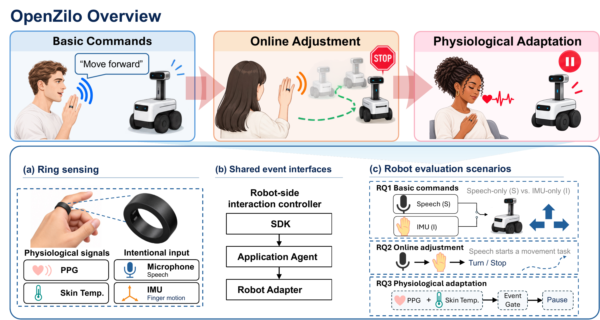
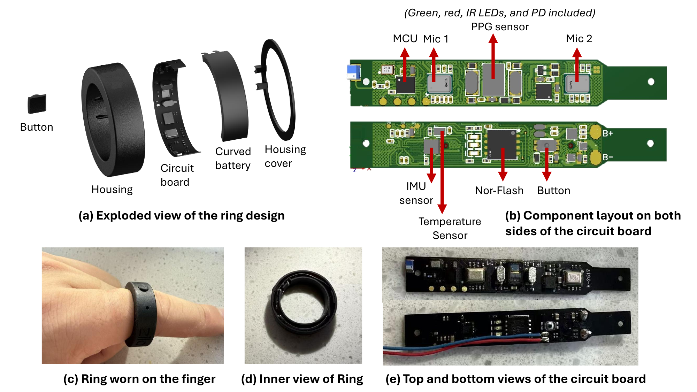
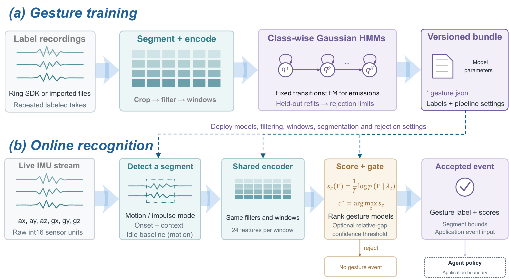

From finger-worn sensing to physical action.
A shared research platform for spoken commands, gesture-based adjustments, and event-triggered robot interaction.

Problem. Recognizing an input does not establish that a robot carried out the intended action, or that an intervention took effect in time.
Approach. OpenZilo separates sensing, event interpretation, interaction policy, and robot execution, making the path from wearable input to physical feedback inspectable.
Evaluation. We characterize seven operating modes and study command execution and online adjustment with 10 participants, alongside a simulated event-response task.
Read the full abstract
Wearable robot interfaces must connect user input to timely physical action. We present OpenZilo, an open smart-ring platform for studying this connection across task stages. The ring integrates a microphone, an inertial measurement unit, photoplethysmography, and skin-temperature sensing. Its software architecture separates acquisition, event interpretation, interaction policy, and robot execution. We characterize seven operating modes and evaluate speech and gesture control with 10 participants. Across five commands and 250 trials per modality, speech and gestures achieved task success rates of 90.4% and 88.8%, respectively. Recognition accuracy exceeded task success for both modalities. Gaussian hidden Markov models achieved higher accuracy than a support vector machine across three vocabulary sizes, with longer scoring times. Following a shared spoken task start, gesture-based adjustments had shorter median response times than speech. Whole-task success was 70.0% with gestures and 64.0% with speech. We further examine physiological-event-triggered robot interaction using simulated event notifications. Mean notification-receipt-to-arrival times were 11.71 s for the robot and 9.20 s for an on-site person. These descriptive findings support evaluating wearable robot interfaces through both recognition and physical outcomes, with timing measures appropriate to each task stage.
Four sensing modalities. A common interface.
The ring integrates speech, motion, optical physiological sensing, and skin temperature in a finger-worn form factor. A Nordic nRF54L15 controller coordinates acquisition, storage, and Bluetooth Low Energy communication with the host.

- Speech
- 2 × Knowles SPH0641LU4H-1 microphones
- Motion
- TDK ICM-42688-P six-axis IMU
- Optical sensing
- ADI MAXM86161 PPG sensor
- Skin temperature
- TI TMP119 temperature sensor
Separate acquisition from action.
The host SDK exposes device capabilities, audio, IMU data, and events. Recognition produces application events; the agent checks task state before a robot adapter translates an action request and returns execution feedback.
- Smart ringSensing & BLE
- Host SDKStreams & events
- Application agentInterpretation & policy
- Robot adapterAction & feedback
Train offline. Recognize online.
The gesture pipeline uses six-axis IMU sequences to train gesture-specific Gaussian hidden Markov models. Online segmentation, feature extraction, scoring, and rejection generate events for the application agent. Speech commands use locally deployed Whisper base.

Measure what the robot actually does.
Recognition accuracy, task success, and physical response time answer different questions. Explore the three evaluations below; all comparisons are descriptive and specific to the tested configuration.
10 participants · 5 commands · 250 trials per modality
Recognition is only part of the story.
Speech and gestures both recognize more commands than they successfully execute. Task success additionally requires the intended physical response.
View command-level response times
| Command | Speech | Gesture |
|---|---|---|
| Forward | 1.37 | 0.56 |
| Backward | 1.54 | 0.62 |
| Turn left | 1.61 | 0.71 |
| Turn right | 1.48 | 0.67 |
| Stop | 1.32 | 0.49 |
Timing begins at speech offset or gesture completion and ends at motion onset or verified stationary state. It excludes input production. See the paper for quartiles, wrong actions, and vocabulary-scaling results.
10 participants · 50 task attempts per condition
Gesture adjustments had shorter response times.
Both conditions begin with the same spoken start. Participants then turn and stop the robot using speech or ring gestures.
| Measure | Speech | Gesture |
|---|---|---|
| Turn response, median | 2.32 s | 1.74 s |
| STOP response, median | 2.18 s | 1.24 s |
| Turn success | 181/200 (90.5%) | 185/200 (92.5%) |
| STOP success | 47/50 (94.0%) | 48/50 (96.0%) |
| Whole-task success | 32/50 (64.0%) | 35/50 (70.0%) |
Timing runs from cue presentation to physical effect, including participant reaction and input production. Some STOP observations also contribute to RQ1; the studies use different timing origins and are not independent replications.
Simulated notifications · 28 valid timing records per responder
From an event notification to local arrival.
A quadruped robot and an on-site person move to a marked destination and stop under matched route and starting-distance conditions.
Mean ± SD, measured from verified notification receipt to arrival. Notifications were manually triggered. This study evaluates responses to simulated events, not automatic physiological-event detection or clinical validity, and does not estimate arrival success across all attempted notifications.
Explore the platform.
The public repository provides the Python SDK, command-line tools, documentation, and device-access examples. The paper describes the hardware, architecture, study protocols, and current evaluation limits.
Citation
Use the preprint citation below. An arXiv identifier or DOI can be added when available.
@misc{ding2026openzilo,
title = {OpenZilo: An Open Smart-Ring Platform for
Human-Centric Sensing and Interaction with Robots},
author = {Ding, Qianggang and Wang, Xingyao and Feng, Rui and
Qin, Chi and Lin, Weijian and Ding, Lizhi and
Tang, Jiankai and Wang, Yuntao and Liu, Xiangke and Liu, Bang},
year = {2026},
note = {Preprint},
url = {https://github.com/ziloai/openzilo}
}